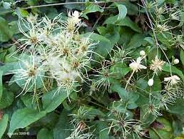

Clématite ou Vigne Blanche ou Herbe aux Gueux

Clématite des haies et Clématite des jardins ou Vigne Blanche ou Herbe aux Gueux (Clematis et clématis vitalba de la famille des Renonculacées)
Toxique et toxicité de contact.
Partie toxique pour les chats en général et le Korat en particulier :
Feuilles surtout pendant la floraison et sève.
Symptômes du processus pathologique :
Le suc de la plante entraîne une inflammation de la peau et des muqueuses (action rubéfiante et vésicante) L'ingestion est quant à elle à l'origine d'une violente inflammation des muqueuses buccale et digestive, d'où ptyalisme, inrumination, puis coliques et constipation évoluant en une diarrhée noirâtre avec augmentation de la diurèse. Lors d'ingestion massive s'ajoutent fréquemment des troubles nerveux : convulsions, tremblements et mydriase, la mort pouvant survenir dans les 12 heures.
Origine de la toxicité (principe actif) :
Protoanémonidine soit ranunculoside, hédéragénine (triterpène pentacyclique), et saponosides.